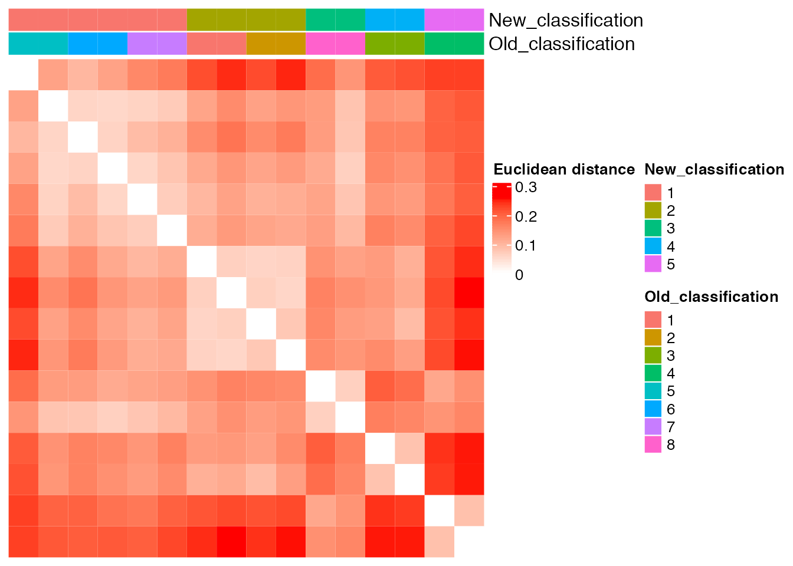
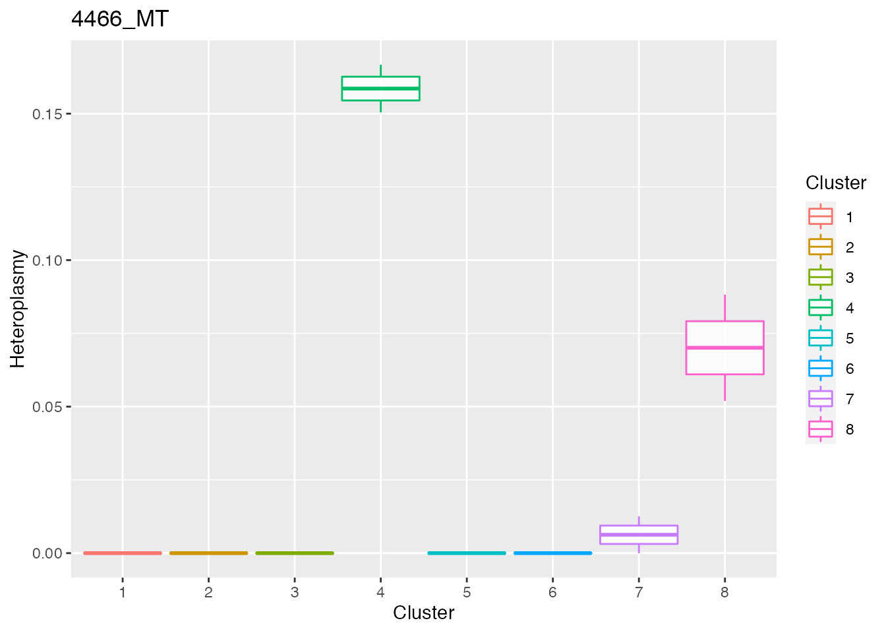
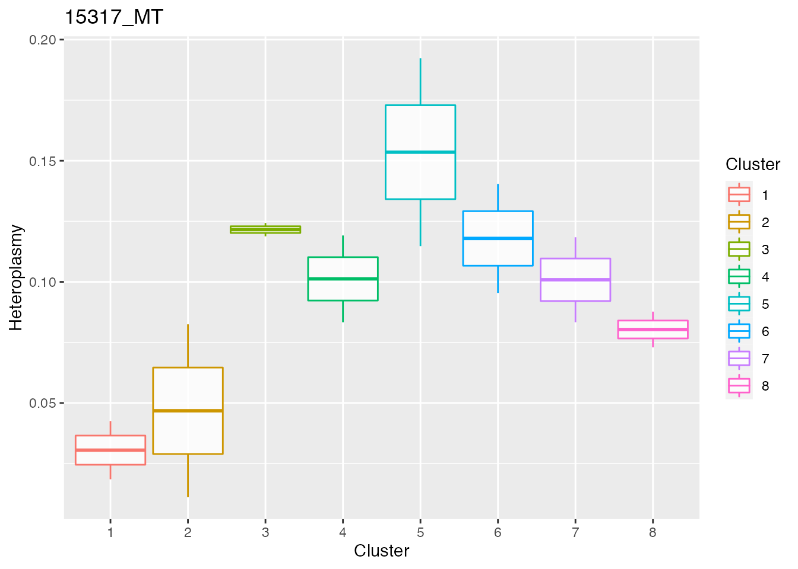
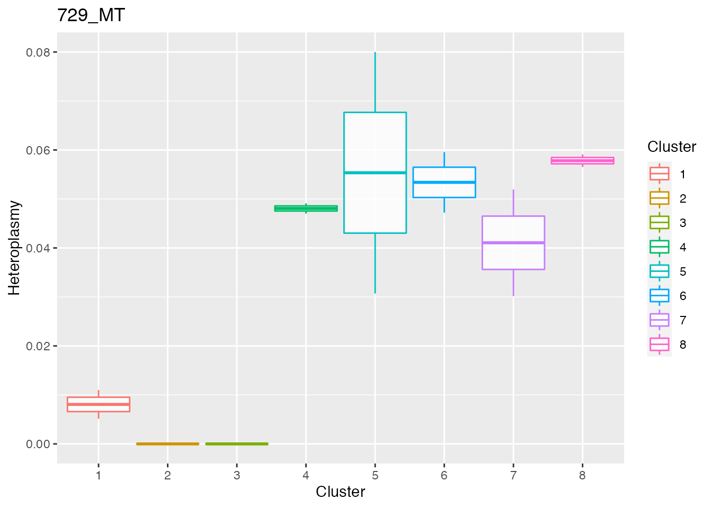
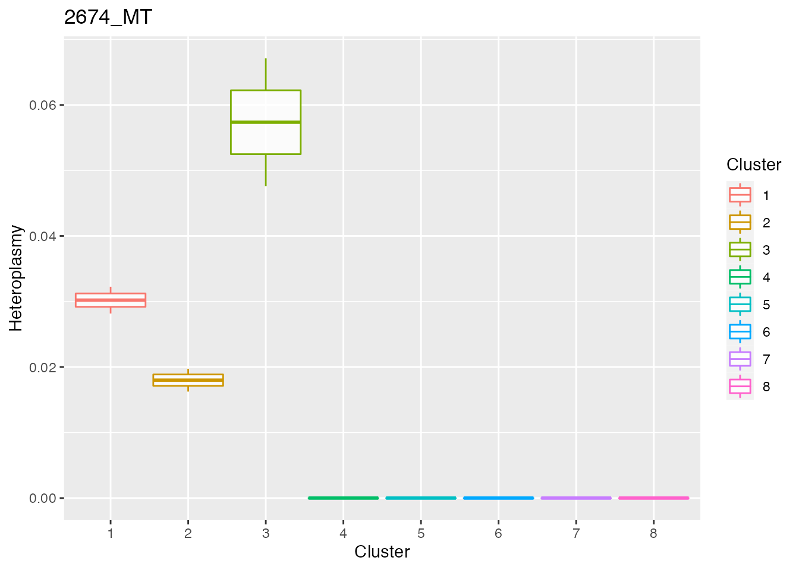
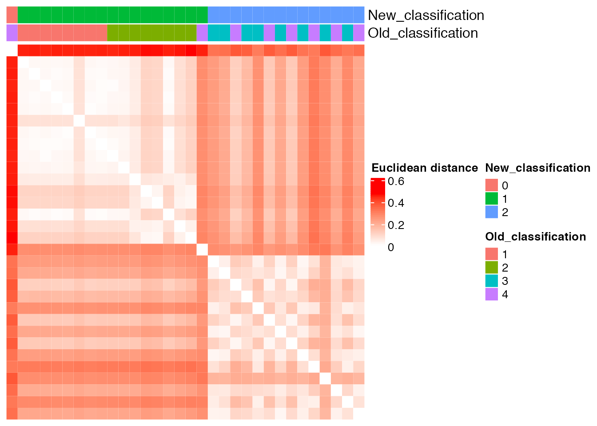

vignettes/lineage_tracing_example_notebook.Rmd
lineage_tracing_example_notebook.Rmd
library(MitoHEAR)In this notebook it is shown the heteroplasmy analysis performed on single cell RNA seq mouse embryo data Goolam M et al, 2016. There are embryos at different stages from 2-cells to 8-cells stage. At each stage, for every cell it is known the embryo of origin.
The first step of the library MitoHEAR is to generate a raw counts allele matrix with cells as rows and the four alleles for each base in the fasta file on the columns. This task is achieved with the function get_raw_counts_allele. As input we need to provide the sorted bam files (one for each cell, with full path), the fasta file of the genomic region of interest and the cell names. The matrix meta_data_antonio_final contains meta data information about the cells (i.e. cell names, cell types, batch).
load(system.file("extdata", "meta_data_antonio_final.Rda", package = "MitoHEAR"))We don’t execute the function get_raw_counts_allele here and we directly load his output. A command line implementation of the function get_raw_counts_allele is also available (see github README file for info).
load(system.file("extdata", "output_SNP_antonio_mt.Rda", package = "MitoHEAR"))The output of get_raw_counts_allele is a list with three elements (see ?get_raw_counts_allele for more info). The first element is the matrix of counts (n_rows = number of cells, n_cols= 4*number of bases) of the four alleles in each base. The row names are equal to cell_names.
matrix_allele_counts <- output_SNP_antonio_mt[[1]]
name_position_allele <- output_SNP_antonio_mt[[2]]
name_position <- output_SNP_antonio_mt[[3]]
row.names(meta_data_antonio_final) <- meta_data_antonio_final$antonio_array.Comment.ENA_RUN.
meta_data_antonio_final <- meta_data_antonio_final[row.names(matrix_allele_counts), ]
row.names(matrix_allele_counts) <- meta_data_antonio_final$antonio_array.Source.Name
row.names(meta_data_antonio_final) <- meta_data_antonio_final$antonio_array.Source.Name
sc_data_all <- get_heteroplasmy(matrix_allele_counts, name_position_allele, name_position, 50, 2000, filtering = 1)
sum_matrix <- sc_data_all[[1]]
sum_matrix_qc <- sc_data_all[[2]]
heteroplasmy_matrix_sc <- sc_data_all[[3]]
allele_matrix_sc <- sc_data_all[[4]]
cluster_sc <- as.character(meta_data_antonio_final[row.names(heteroplasmy_matrix_sc), ]$antonio_array.Characteristics.developmental.stage.)
index_sc <- sc_data_all[[5]]The number of cells with heteroplasmy increase along time. Indeed cells from 8-cells stage embryo show higher number of bases with heteroplasmy in comparison with cells from previous stages (2-cells and 4 cells)
We select only the cells for the 2-cells stage for down-stream analysis.
stage_2_cells <- row.names(matrix_allele_counts)[grep("2cell_", row.names(matrix_allele_counts))]
stage_2_cells <- stage_2_cells[!grepl("32cell_", stage_2_cells)]The next step is to obtain a matrix with allele frequencies and a matrix with heteroplasmy values for each pair of cell-base. This is obtained with the function get_heteroplasmy. This function performs a two step filtering procedure, the first on the cells and the second on the bases. The aim is to keep only the cells that have more than number_reads counts in more than number_positions bases and to keep only the bases that are covered by more than number_reads counts in all the remaining cells (filtering=1) or in at least 50% of cells in each cluster (filtering=2).
sc_data <- get_heteroplasmy(matrix_allele_counts[stage_2_cells, ], name_position_allele, name_position, 50, 2000, filtering = 1)Among the output of get_heteroplasmy there are the matrix with heteroplasmy values and the matrix with allele frequencies, for all the cells and bases that pass the two steps filtering procedure. The heteroplasmy is computed as 1-max(f), where f are the frequencies of the four alleles for every cell-base pair. For more info about the output see ?get_heteroplasmy.
sum_matrix <- sc_data[[1]]
sum_matrix_qc <- sc_data[[2]]
heteroplasmy_matrix_sc <- sc_data[[3]]
allele_matrix_sc <- sc_data[[4]]
cluster_sc <- as.character(meta_data_antonio_final[row.names(heteroplasmy_matrix_sc), ]$antonio_array.Characteristics.developmental.stage.)
condition_sc <- rep(0, length(cluster_sc))
condition_sc[grep("2cell_1_", row.names(heteroplasmy_matrix_sc))] <- "1"
condition_sc[grep("2cell_2_", row.names(heteroplasmy_matrix_sc))] <- "2"
condition_sc[grep("2cell_3_", row.names(heteroplasmy_matrix_sc))] <- "3"
condition_sc[grep("2cell_4_", row.names(heteroplasmy_matrix_sc))] <- "4"
condition_sc[grep("2cell_5_", row.names(heteroplasmy_matrix_sc))] <- "5"
condition_sc[grep("2cell_6_", row.names(heteroplasmy_matrix_sc))] <- "6"
condition_sc[grep("2cell_7_", row.names(heteroplasmy_matrix_sc))] <- "7"
condition_sc[grep("2cell_8_", row.names(heteroplasmy_matrix_sc))] <- "8"
index_sc <- sc_data[[5]]MitoHEAR offers the possibility to perform an unsupervised hierarchical clustering on the cells based on a distance matrix with the function clustering_dist_ang. Given a base, the distance between two cells is the angular distance of the allele frequencies. Given a base, the variance of the distance values between two cells is also computed. Top bases with highest variance are selected for down stream analysis. We can represent the difference between two cells as a vector whose coordinates are the angular distances of the top bases. The total distance between two cell is the euclidean norm of the vector of difference between the two cells. The output of clustering_dist_ang is a list. The first element is a data frame which contains the old classification (partition available before the cluster analysis based on allele frequencies) and the new classification (partition provided by the cluster analysis based on allele frequencies ). The second element is the distance matrix, on which the hierarchical clustering is done. The third element is a vector with the top bases according to variance.
It is also possible to run clustering_dist_ang in a supervised approach. In this case the bases used for hierarchical clustering are not selected according to variance, but are directly provided with the parameter relevant_bases. The heatmap of the distance matrix with cells sorted according to the new classification is shown below. The cluster analysis based on allele frequencies information can be a powerful way to perform a lineage tracing analysis, by grouping together cells which are from the same embryo. See ?clustering_dist_ang for more info.
result_clustering_sc <- clustering_angular_distance(heteroplasmy_matrix_sc, allele_matrix_sc, condition_sc, length(colnames(heteroplasmy_matrix_sc)), deepSplit_param = 0, minClusterSize_param = 2, 0.2, min_value = 0.001, index = index_sc, relevant_bases = NULL)
#> ..cutHeight not given, setting it to 0.255 ===> 99% of the (truncated) height range in dendro.
#> ..done.
old_new_classification <- result_clustering_sc[[1]]
dist_matrix_sc <- result_clustering_sc[[2]]
top_dist <- result_clustering_sc[[3]]
common_idx <- result_clustering_sc[[4]]
old_classification <- as.vector(old_new_classification[, 1])
new_classification <- as.vector(old_new_classification[, 2])Comparison between the ground truth and the new partition obtained with unsupervised cluster analysis
plot_heatmap(new_classification, old_classification, (dist_matrix_sc), cluster_columns = F, cluster_rows = F, "Euclidean distance")
Below the top 4 bases selected for the unsupervised cluster analysis
q <- list()
for ( i in 1:length(top_dist[1:4])){
p <- plot_heteroplasmy(top_dist[i], heteroplasmy_matrix_sc, condition_sc, index_sc)
q <- list(q, p)
}
q
#> [[1]]
#> [[1]][[1]]
#> [[1]][[1]][[1]]
#> [[1]][[1]][[1]][[1]]
#> list()
#>
#> [[1]][[1]][[1]][[2]]
#>
#>
#> [[1]][[1]][[2]]
#>
#>
#> [[1]][[2]]
#>
#>
#> [[2]]
The next step is to obtain a matrix with allele frequencies and a matrix with heteroplasmy values for each pair of cell-base. This is obtained with the function get_heteroplasmy. This function performs a two steps filtering procedure, the first on the cells and the second on the bases. The aim is to keep only the cells that have more than number_reads counts in more than number_positions bases and to keep only the bases that are covered by more than number_reads counts in all the remaining cells (filtering=1) or in at least 50% of cells in each cluster (filtering=2).
sc_data <- get_heteroplasmy(matrix_allele_counts[stage_8_cells, ], name_position_allele, name_position, 50, 2000, filtering = 1)Among the output of get_heteroplasmy there are the matrix with heteroplasmy values and the matrix with allele frequencies, for all the cells and bases that pass the two steps filtering procedure. The heteroplasmy is computed as 1-max(f), where f are the frequencies of the four alleles for every cell-base pair. For more info about the ouput see ?get_heteroplasmy.
sum_matrix <- sc_data[[1]]
sum_matrix_qc <- sc_data[[2]]
heteroplasmy_matrix_sc <- sc_data[[3]]
allele_matrix_sc <- sc_data[[4]]
cluster_sc <- as.character(meta_data_antonio_final[row.names(heteroplasmy_matrix_sc), ]$antonio_array.Characteristics.developmental.stage.)
condition_sc <- rep(0, length(cluster_sc))
condition_sc[grep("8cell_1_", row.names(heteroplasmy_matrix_sc))] <- "1"
condition_sc[grep("8cell_2_", row.names(heteroplasmy_matrix_sc))] <- "2"
condition_sc[grep("8cell_3_", row.names(heteroplasmy_matrix_sc))] <- "3"
condition_sc[grep("8cell_4_", row.names(heteroplasmy_matrix_sc))] <- "4"
index_sc <- sc_data[[5]]
result_clustering_sc <- clustering_angular_distance(heteroplasmy_matrix_sc, allele_matrix_sc, condition_sc, length(colnames(heteroplasmy_matrix_sc)), deepSplit_param = 0, minClusterSize_param = 8, 0.2, min_value = 0.001, index = index_sc, relevant_bases = NULL)
#> ..cutHeight not given, setting it to 0.463 ===> 99% of the (truncated) height range in dendro.
#> ..done.
old_new_classification <- result_clustering_sc[[1]]
dist_matrix_sc <- result_clustering_sc[[2]]
top_dist <- result_clustering_sc[[3]]
common_idx <- result_clustering_sc[[4]]
old_classification <- as.vector(old_new_classification[, 1])
new_classification <- as.vector(old_new_classification[, 2])Comparison between the ground truth and the new partition obtained with unsupervised cluster analysis.
plot_heatmap(new_classification, old_classification, (dist_matrix_sc), cluster_columns = F, cluster_rows = F, "Euclidean distance")
utils::sessionInfo()
#> R version 4.0.2 (2020-06-22)
#> Platform: x86_64-apple-darwin17.0 (64-bit)
#> Running under: macOS Mojave 10.14.6
#>
#> Matrix products: default
#> BLAS: /Library/Frameworks/R.framework/Versions/4.0/Resources/lib/libRblas.dylib
#> LAPACK: /Library/Frameworks/R.framework/Versions/4.0/Resources/lib/libRlapack.dylib
#>
#> locale:
#> [1] en_US.UTF-8/en_US.UTF-8/en_US.UTF-8/C/en_US.UTF-8/en_US.UTF-8
#>
#> attached base packages:
#> [1] stats graphics grDevices utils datasets methods base
#>
#> other attached packages:
#> [1] MitoHEAR_0.1.0
#>
#> loaded via a namespace (and not attached):
#> [1] Rcpp_1.0.7 circlize_0.4.13 png_0.1-7
#> [4] assertthat_0.2.1 rprojroot_2.0.2 digest_0.6.29
#> [7] utf8_1.2.2 R6_2.5.1 dynamicTreeCut_1.63-1
#> [10] stats4_4.0.2 evaluate_0.14 ggplot2_3.3.5
#> [13] highr_0.9 pillar_1.6.4 GlobalOptions_0.1.2
#> [16] rlang_0.4.12 jquerylib_0.1.4 magick_2.7.3
#> [19] S4Vectors_0.28.1 GetoptLong_1.0.5 rmarkdown_2.11
#> [22] pkgdown_2.0.2 labeling_0.4.2 textshaping_0.3.6
#> [25] desc_1.2.0 stringr_1.4.0 munsell_0.5.0
#> [28] compiler_4.0.2 xfun_0.29 pkgconfig_2.0.3
#> [31] systemfonts_1.0.4 BiocGenerics_0.36.1 shape_1.4.6
#> [34] htmltools_0.5.2 tidyselect_1.1.1 tibble_3.1.6
#> [37] IRanges_2.24.1 matrixStats_0.61.0 fansi_0.5.0
#> [40] crayon_1.4.2 dplyr_1.0.7 grid_4.0.2
#> [43] DBI_1.1.2 jsonlite_1.7.2 gtable_0.3.0
#> [46] lifecycle_1.0.1 magrittr_2.0.1 scales_1.1.1
#> [49] stringi_1.7.6 cachem_1.0.6 farver_2.1.0
#> [52] fs_1.5.2 bslib_0.3.1 ellipsis_0.3.2
#> [55] ragg_1.2.2 vctrs_0.3.8 generics_0.1.1
#> [58] rdist_0.0.5 rjson_0.2.20 RColorBrewer_1.1-2
#> [61] tools_4.0.2 Cairo_1.5-12.2 glue_1.6.0
#> [64] purrr_0.3.4 parallel_4.0.2 fastmap_1.1.0
#> [67] yaml_2.2.1 clue_0.3-60 colorspace_2.0-2
#> [70] cluster_2.1.0 ComplexHeatmap_2.6.2 memoise_2.0.1
#> [73] knitr_1.37 sass_0.4.0